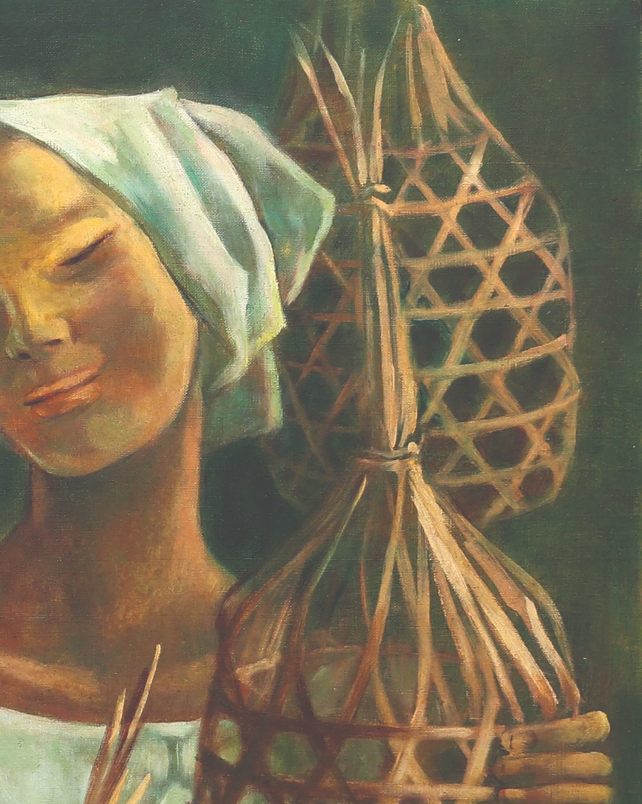
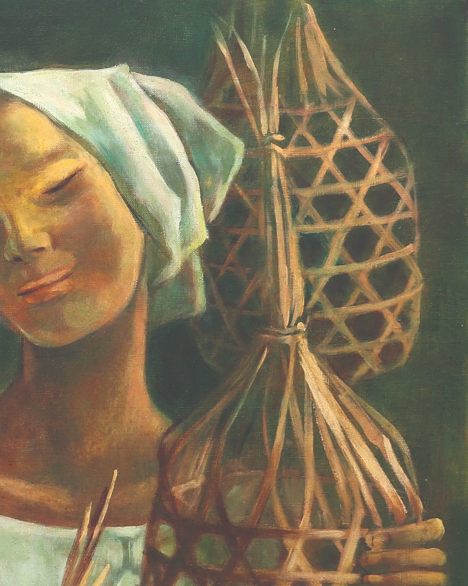
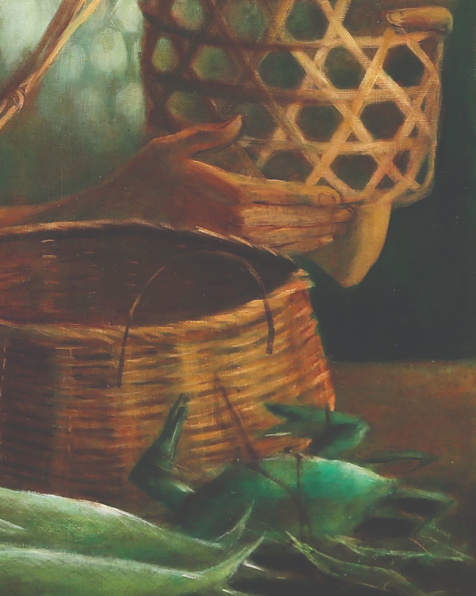
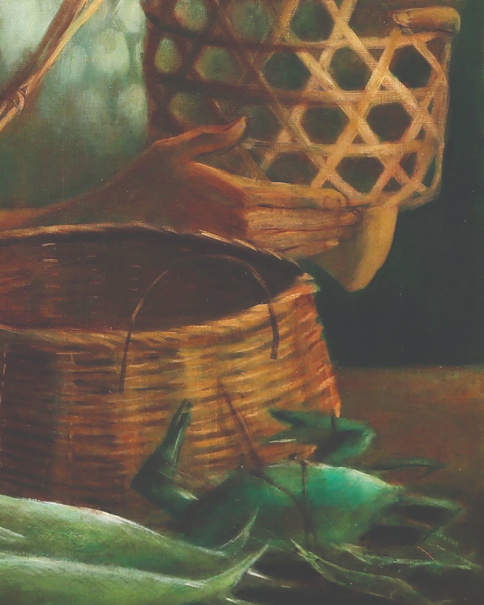

Aninta Magsaysay-Ho
She was a Filipino painter best known for her Social Realist and post-Cubist portrayals of Filipino life and culture, notably and frequently portraying groups of women engaged in labor. The name of the artwork below is "Women with Baskets".

 


 
